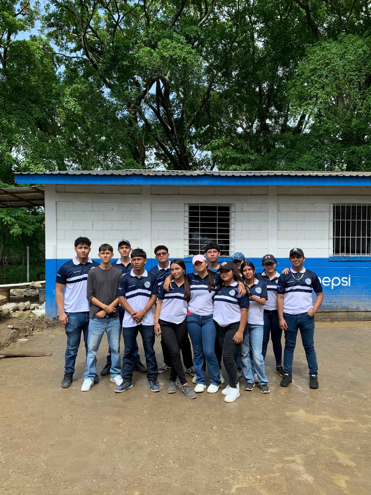
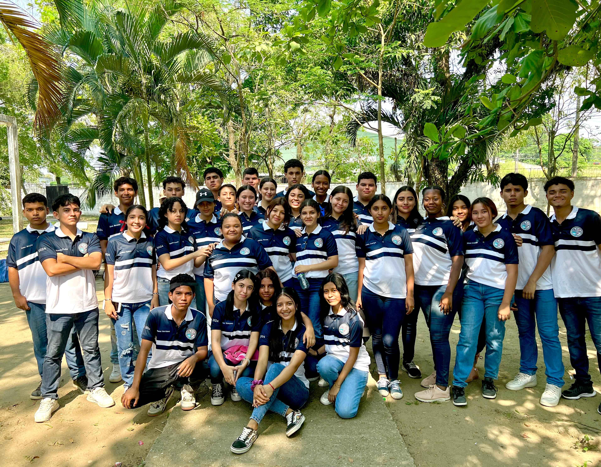
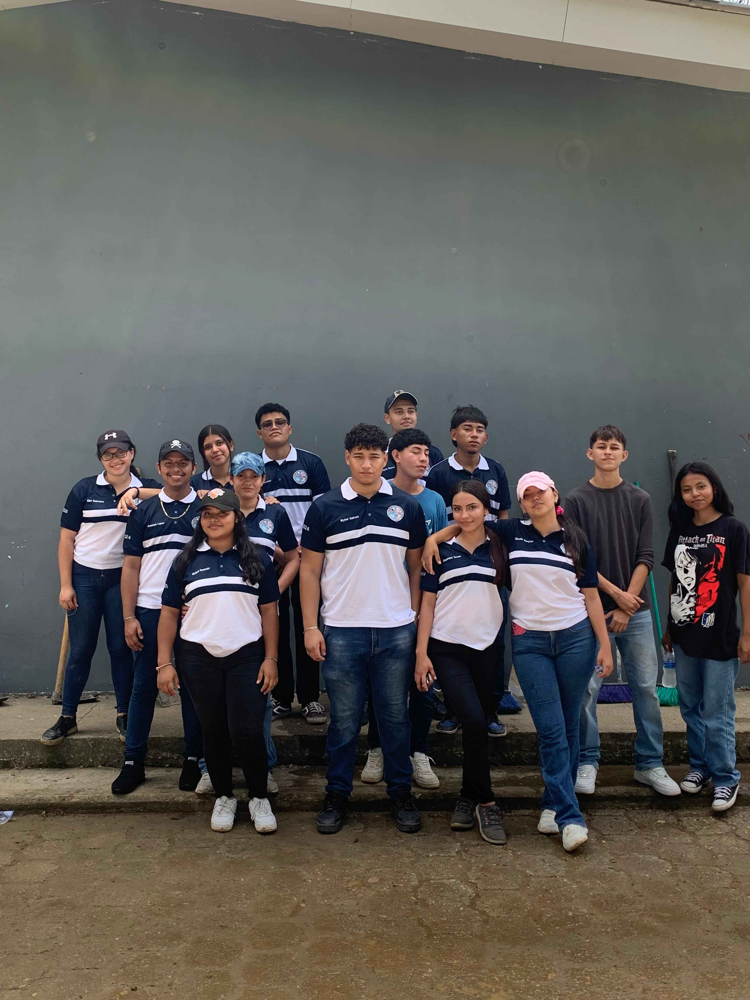

Bienvenido al Centro Educativo Franklin Delano Roosevelt
El Centro Educativo Franklin Delano Roosevelt se enorgullece de ser una de las instituciones más destacadas de Puerto Cortés, Honduras. Ofrecemos una formación técnica de alta calidad que prepara a nuestros estudiantes para enfrentarse a los retos del mundo laboral y académico.
Contamos con un cuerpo docente altamente capacitado, infraestructura moderna y un enfoque educativo orientado hacia el desarrollo integral de nuestros estudiantes. Nuestro objetivo es no solo brindar conocimientos técnicos, sino también fomentar valores como la responsabilidad, el trabajo en equipo y el liderazgo.
Desde su fundación, el Centro Educativo Franklin Delano Roosevelt ha sido pionero en ofrecer programas técnicos de vanguardia en áreas como Informática, Contaduría, Construcciones Metálicas y Administración de Empresas. Nos esforzamos en mantenernos a la par de las tendencias tecnológicas y laborales, asegurando que nuestros egresados sean competitivos en el mercado.
Te invitamos a conocer más sobre nuestras carreras técnicas y cómo podemos ayudarte a alcanzar tus metas profesionales.
Video Institucional
Nuestras Carreras Técnicas
Informática
La carrera de Informática te prepara para un futuro en el desarrollo de software, redes y tecnologías de la información.
El programa de Informática cubre áreas como la programación, diseño de bases de datos, desarrollo web, ciberseguridad, redes y más. Los egresados tienen habilidades para diseñar, implementar y administrar soluciones tecnológicas.
Contaduría y Finanzas
Enfocada en la gestión financiera y contable, ideal para aquellos interesados en el mundo de los negocios y las finanzas.
La carrera de Contaduría y Finanzas abarca contabilidad, análisis financiero, auditoría, y planificación financiera. Los graduados están capacitados para trabajar en empresas, bancos y consultoras, gestionando recursos y tomando decisiones financieras clave.
Construcciones Metálicas
Prepara a los estudiantes para trabajar en el diseño, construcción y mantenimiento de estructuras metálicas.
Esta carrera incluye el estudio de materiales metálicos, técnicas de soldadura, dibujo técnico, y diseño de estructuras. Los egresados pueden trabajar en la industria de la construcción, fabricación y mantenimiento de infraestructuras.
Administración de Empresas
Forma a los futuros líderes empresariales con habilidades en la gestión de organizaciones, planificación y toma de decisiones.
La carrera de Administración de Empresas ofrece formación en gestión de recursos humanos, finanzas, marketing, y planificación estratégica. Los egresados son capaces de dirigir equipos y gestionar organizaciones de manera eficiente y ética.
Sobre Nosotros
El Centro Educativo Franklin Delano Roosevelt, fundado en 1981, es una de las instituciones más grandes y reconocidas en Puerto Cortés, Honduras. Desde su oficialización, nos hemos dedicado a ofrecer educación técnica y académica de alta calidad, con el objetivo de formar a las futuras generaciones de profesionales y líderes.
Como institución pública, el Centro Educativo Franklin Delano Roosevelt está comprometido con garantizar el acceso a una educación inclusiva, gratuita y de calidad para todos los estudiantes de la comunidad. A lo largo de los años, hemos mantenido altos estándares educativos y un ambiente propicio para el aprendizaje y el desarrollo personal.
Nuestro campus cuenta con tres edificios bien equipados que albergan aulas modernas, laboratorios especializados, salas de informática y talleres técnicos, lo que nos permite ofrecer una experiencia educativa integral. Estas instalaciones están diseñadas para apoyar el aprendizaje práctico y teórico de los estudiantes, brindándoles las herramientas necesarias para triunfar en sus áreas de estudio.
El colegio se destaca no solo por su infraestructura, sino también por su enfoque en la excelencia académica y la preparación técnica. Nuestros programas abarcan carreras como Informática, Contaduría y Finanzas, Construcciones Metálicas, y Administración de Empresas. Además, trabajamos en estrecha colaboración con empresas locales e instituciones de educación superior para garantizar que nuestros egresados estén listos para enfrentar los retos del mercado laboral.
A lo largo de las décadas, hemos ganado un lugar destacado en la comunidad gracias a nuestro compromiso con la educación y el desarrollo integral de los estudiantes. Nuestro enfoque en la innovación, junto con una sólida base de valores, nos permite seguir siendo una institución líder en el ámbito educativo de la región.
Bienvenido al Centro Educativo Franklin Delano Roosevelt
El Centro Educativo Franklin Delano Roosevelt se enorgullece de ser una de las instituciones más destacadas de Puerto Cortés, Honduras. Ofrecemos una formación técnica de alta calidad que prepara a nuestros estudiantes para enfrentarse a los retos del mundo laboral y académico.
Contamos con un cuerpo docente altamente capacitado, infraestructura moderna y un enfoque educativo orientado hacia el desarrollo integral de nuestros estudiantes. Nuestro objetivo es no solo brindar conocimientos técnicos, sino también fomentar valores como la responsabilidad, el trabajo en equipo y el liderazgo.
Promoción 2024
 Nos complace anunciar que la Promoción 2024 del Centro Educativo Franklin Delano Roosevelt está compuesta por un grupo excepcional de jóvenes talentosos y dedicados. Estos estudiantes han demostrado su compromiso con el aprendizaje, superando desafíos y destacándose en diversas áreas académicas y técnicas.
Los graduados de la Promoción 2024 están preparados para afrontar los desafíos del futuro, con habilidades técnicas y humanas que los convertirán en líderes en sus respectivas áreas de estudio. Estamos orgullosos de haber sido parte de su formación y les deseamos el mayor de los éxitos en sus futuras carreras y proyectos.
Contáctanos
En el Centro Educativo Franklin Delano Roosevelt, estamos siempre dispuestos a escuchar y responder cualquier pregunta o inquietud que puedas tener. Ya sea que desees obtener más información sobre nuestras carreras técnicas, nuestros procesos de admisión, o simplemente quieras conocer más sobre nuestras actividades académicas y extracurriculares, estamos aquí para ayudarte.
Si deseas comunicarte con nosotros, puedes hacerlo a través de los siguientes medios:
- Correo Electrónico: Puedes escribirnos a contacto@roosevelt.edu.hn. Nuestro equipo se encargará de responderte a la brevedad posible.
- Teléfono: También puedes llamarnos al número (+504) 1234-5678 durante nuestro horario de atención, de lunes a viernes, de 8:00 a.m. a 4:00 p.m.
- Visítanos: Si prefieres una atención personalizada, te invitamos a visitarnos en nuestras instalaciones ubicadas en el corazón de Puerto Cortés. Nuestro personal administrativo estará encantado de asistirte y brindarte toda la información que necesites sobre nuestra oferta educativa y las actividades que realizamos.
Además, puedes seguirnos en nuestras redes sociales para mantenerte al día con las últimas noticias, eventos y actividades del colegio. Somos activos en las plataformas más populares para asegurarnos de que nuestra comunidad esté siempre informada y conectada:
No dudes en comunicarte con nosotros para cualquier consulta. Tu futuro académico es nuestra prioridad, y estamos aquí para ayudarte en cada paso de tu camino educativo.